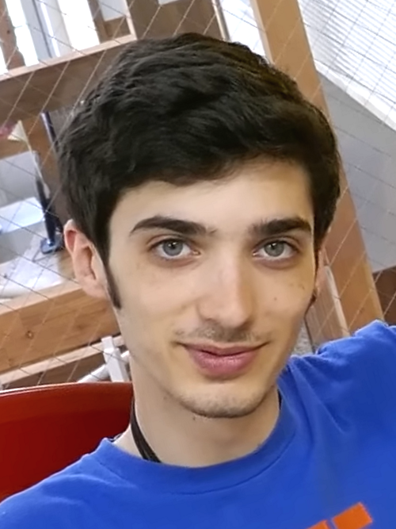

Introduction
Robert F. "Toby" Fox, born October 11, 1991, is an American video game developer and composer. He is best known as the creator of the role-playing games Undertale and Deltarune, both of which he designed, wrote, and scored largely on his own.
Before either of those projects, Fox spent his teenage years building games in RPG Maker and modifying existing ones. His best-known early release was the EarthBound Halloween Hack, a ROM hack published in 2008. He gradually shifted toward music, and in 2009 began composing for Andrew Hussie's webcomic Homestuck, eventually taking on a coordinating role within its music team.
Undertale arrived in 2015 and became an unexpected commercial and cultural success, drawing nominations from the British Academy Games Awards, the Game Awards, and the D.I.C.E. Awards. Its reception opened doors to outside composing work, including contributions to Super Smash Bros. Ultimate and several entries in the Pokémon series. Beginning in 2018, Fox started releasing Deltarune, an episodic game set in a parallel universe to Undertale, which critics have received warmly as each chapter has appeared.

Early life and education
Fox was born in Manchester, New Hampshire, the third of four children. He first encountered EarthBound at around four years old, after the game was given to one of his older brothers as a gift, and he has since credited it with helping him learn to read. By the time he was five he was sketching level layouts modeled on the Mega Man X series during church services.
His brothers introduced him to RPG Maker 2000 while he was in elementary school, and the siblings began making games together. The first of these, Toby's Adventure, was his earliest completed project. At ten he discovered the Touhou Project series through a free games website and played Embodiment of Scarlet Devil and Perfect Cherry Blossom. A year later he found Starmen.net, a fan community devoted to EarthBound, and has said that wanting to impress its members was part of what pushed him to keep making games.
Fox is largely a self-taught musician. He had taken piano lessons in second grade but returned to the instrument during middle school, teaching himself video game music by ear, and he played trumpet throughout high school. He later told Touhou creator ZUN that a piano performance of "Necrofantasia" at a high school summer camp earned him a standing ovation.
Also during high school, Fox began producing EarthBound ROM hacks, releasing the EarthBound Halloween Hack in 2008 as an entry in a Starmen.net hacking competition. In his senior year he started recording piano covers of music from Homestuck, which brought him to the attention of the comic's creator, Andrew Hussie; he later served as production coordinator for the project's music team. Fox went on to attend and graduate from Northeastern University.
Career
Undertale
Undertale, released in 2015, was Fox's first full game outside of ROM hacking, and he composed its soundtrack as well. Development stretched across thirty-two months. He financed it through a Kickstarter campaign launched on June 25, 2013 with a modest goal of five thousand dollars; by the time it closed a month later it had drawn $51,124 from 2,398 backers.
Fox handled nearly every part of the game himself, deliberately avoiding dependence on collaborators, with art the main exception — he brought in Temmie Chang to work on it. Many of the game's characters began as drawings in his college notebooks.
The game went on to sell more than 3.5 million copies and was widely described as a breakout hit and a pop-culture phenomenon. It picked up a British Academy Games Award nomination along with three nominations each at the Game Awards and the D.I.C.E. Awards, and it attracted a large and highly active fan community. Fox has been notably relaxed about its reception, remarking that the game is not going to appeal to everyone and that he does not mind when people say they dislike it. In 2016 he wrote that he personally still considered Undertale a niche title deserving of roughly an eight-out-of-ten score.
Odder milestones followed. The YouTube personality MatPat presented a copy of the game to Pope Francis in 2016. Fox joined the team behind the magazine A Profound Waste of Time that same year, and in 2017 was named to the Forbes 30 Under 30 list in games, at which point Undertale had passed two million copies sold.
The game's popularity in Japan led to a meeting with Super Smash Bros. creator Masahiro Sakurai. In September 2019, the Undertale character Sans was added to Super Smash Bros. Ultimate as a downloadable Mii costume, accompanied by a fresh arrangement of "Megalovania" that Fox produced for the occasion.
Deltarune
The idea for Deltarune came to Fox in a fever dream in 2011. He built an early version the following year before setting it aside. The project resurfaced on October 30, 2018, when he asked Undertale fans to visit the game's official site.
Deltarune takes place in a parallel universe to Undertale, and Fox has said it is more rewarding for players who have finished the earlier game. At the outset he hoped not to spend more than seven years on it and expressed interest in assembling a team, noting that without one he could offer no estimate of when it might be done.
Several months after the first chapter became playable, he said he remained confident he would finish the rest, describing the writing and drawing as slow but ongoing, and mentioned he had already written around fifty songs for material beyond Chapter 1. Chapter 2 was released free of charge on September 17, 2021, a decision he connected to how difficult the period of the COVID-19 pandemic had been for people generally.
Chapters 3 and 4 arrived on June 4, 2025, bundled together with the first two as a paid release, with the promise that subsequent chapters would reach owners as free updates. Chapter 5 followed on June 24, 2026, and Chapter 6 is projected for 2027. The finished game is planned to run to seven chapters in total.
Other musical work
Outside his own games, Fox has written music for the 2017 Homestuck game Hiveswap, for Escaped Chasm, a short narrative game by Undertale artist Temmie Chang, and for Game Freak's 2019 role-playing game Little Town Hero, where his contributions were arranged by Pokémon composer Hitomi Sato.
He composed a track for Pokémon Sword and Shield and several more for Pokémon Scarlet and Violet, and produced a remix of Ed Sheeran's "Celestial" for that game's expansion, The Indigo Disk. In 2024 he worked with ZUN on downloadable content for Touhou Danmaku Kagura Phantasia Lost, including a track that fuses the Touhou song "U.N. Owen Was Her?" with Undyne's boss theme from Undertale, "Battle Against a True Hero".
Voice acting
Fox has taken on voice roles in television and web animation. He made his debut in 2023 on the animated series We Baby Bears, playing a skeleton named Jared in the episode "Polly's New Crew", and afterward described voicing a cartoon character as a long-held ambition. In 2025 he voiced John Egbert in the Homestuck animated pilot.
Philanthropy
Fox donated ten thousand dollars during an Undertale speedrun at the Games Done Quick event AGDQ 2017. Undertale has also been included in several Humble Bundles, among them two charity collections for coronavirus relief that raised $6.5 million in 2020 and $1.1 million in 2021.
For the game's seventh anniversary in 2022, he ran a charity auction called the Spamton Sweepstakes through the Deltarune website on September 17, supporting Child's Play and Pakistan Children Relief. It brought in $322,805.68.
In 2024, following a copyright dispute between the developers of the fan game Undertale Yellow and Materia Collective chief executive Sebastian Wolff over the use of Fox's music, Fox donated twenty thousand dollars to AbleGamers as a gesture of apology.
Undertale's tenth anniversary was marked by a two-day livestream held with Fangamer on September 21 and 22, 2025, in support of Doctors Without Borders. The event auctioned collectables and featured new in-game content made available only during the broadcast, raising $361,407 across the two days.
Influences
Fox has described being captivated by the music and atmosphere of Final Fantasy VI. Other Japanese role-playing games shaped his work as well, particularly EarthBound, Secret of Mana, and Super Mario RPG.
He has singled out composer Yoko Shimomura as a figure he looked up to. Her track "Megalomania", written for Live A Live, proved especially formative: Fox originally meant to use a cover of it in a game of his own, but grew tired of transcribing the piece and wrote a new composition instead, which became "Megalovania".
He encountered the Touhou Project series at a young age and downloaded demo versions of Embodiment of Scarlet Devil and Perfect Cherry Blossom during middle school, later performing a piano arrangement of the Perfect Cherry Blossom track "Necrofantasia" at his church's summer camp. Fox has also pointed to the Ace Attorney series as an influence, especially in how it handles characterization.
Personal life
Fox is private about his life and rarely gives interviews. He lives with chronic wrist and hand pain that regularly prevents him from programming or composing, and he often uses speech-to-text software as his primary means of input. In September 2020 he cited a flare-up of that pain as one reason for delays in Deltarune's development.
He speaks Japanese and has a cat named Kikky.
Notable works
| Year | Title | Role |
|---|---|---|
| 2008 | EarthBound Halloween Hack | Director, composer, writer |
| 2015 | Undertale | Director, composer, writer |
| 2016 | Rose of Winter | Composer |
| 2017 | Hiveswap: Act 1 | Composer |
| 2018 | Deltarune Chapter 1 | Director, composer, writer |
| 2019 | Escaped Chasm | Composer |
| 2019 | Little Town Hero | Composer |
| 2019 | Pokémon Sword and Shield | Composer |
| 2021 | Deltarune Chapter 2 | Director, composer, writer |
| 2022 | Pokémon Scarlet and Violet | Composer |
| 2025 | Deltarune Chapters 3+4 | Director, composer, writer |
| 2026 | Deltarune Chapter 5 | Director, composer, writer |